Docker 运行在 CentOS 7 上，要求系统为64位、系统内核版本为 3.10 以上。Docker 运行在 CentOS-6.5 或更高的版本的 CentOS 上，要求系统为64位、系统内核版本为 2.6.32-431 或者更高版本。
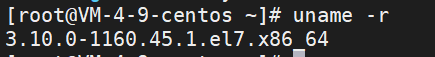
如果版本不符合要求，可以使用下面的某个指令升级
xxxxxxxxxx51yum -y update2升级所有包，改变软件设置和系统设置，注意系统内核版本也会升级，因此如果需要升级使用改命令。3
4yum -y upgrade5升级所有包，不改变软件设置和系统设置，系统版本升级，但是不改变内核
xxxxxxxxxx11yum remove docker docker-client docker-client-latest docker-common docker-latest docker-latest-logrotate docker-logrotate docker-engine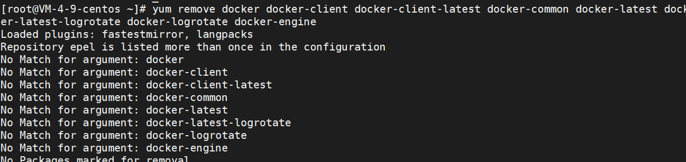
由于我没有安装过，所以没有匹配的文件
安装依赖
xxxxxxxxxx11yum install -y yum-utils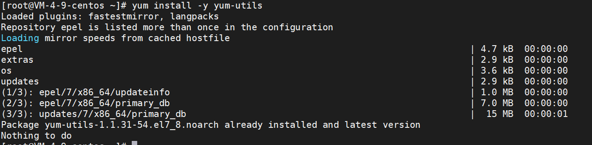
设置仓库源
xxxxxxxxxx11yum-config-manager --add-repo https://download.docker.com/linux/centos/docker-ce.repo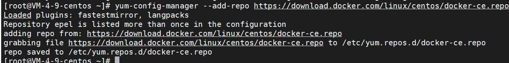
更新索引
xxxxxxxxxx11yum makecache fast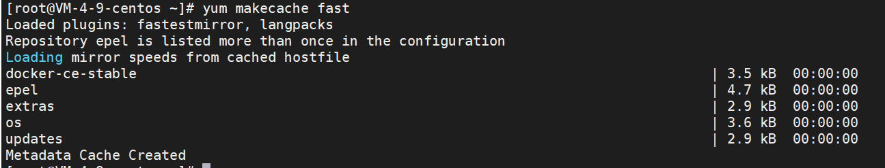
安装docker引擎
Install the latest version of Docker Engine, containerd, and Docker Compose
xxxxxxxxxx11yum install docker-ce docker-ce-cli containerd.io docker-compose-plugindocker-ce-cli这个下载特别慢，还可能安装失败，再次进行安装即可
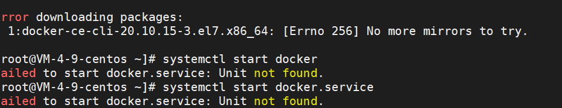
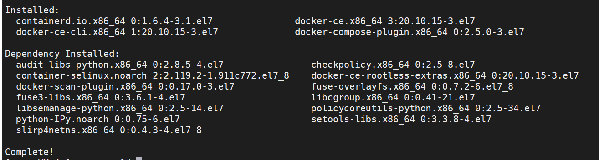
启动
xxxxxxxxxx11systemctl start docker查看状态
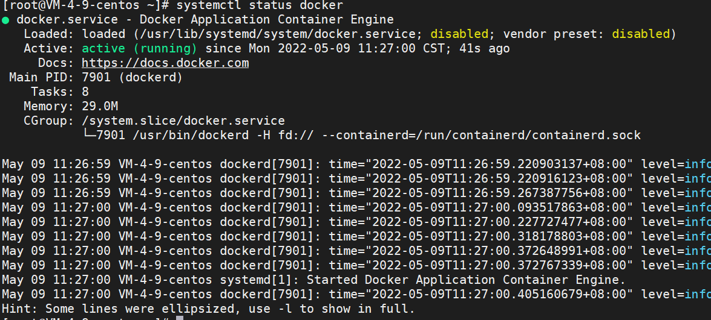
设置开机自启动
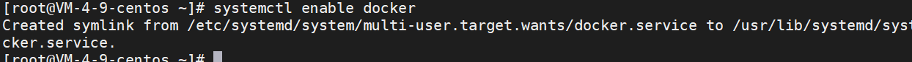
查看版本
有client和service两部分表示docker安装启动都成功了
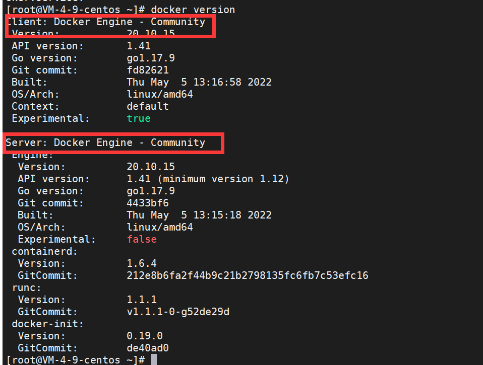
xxxxxxxxxx11docker system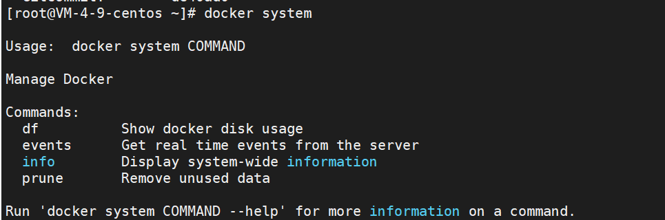
xxxxxxxxxx31docker info2展示信息3目前容器中没有程序在运行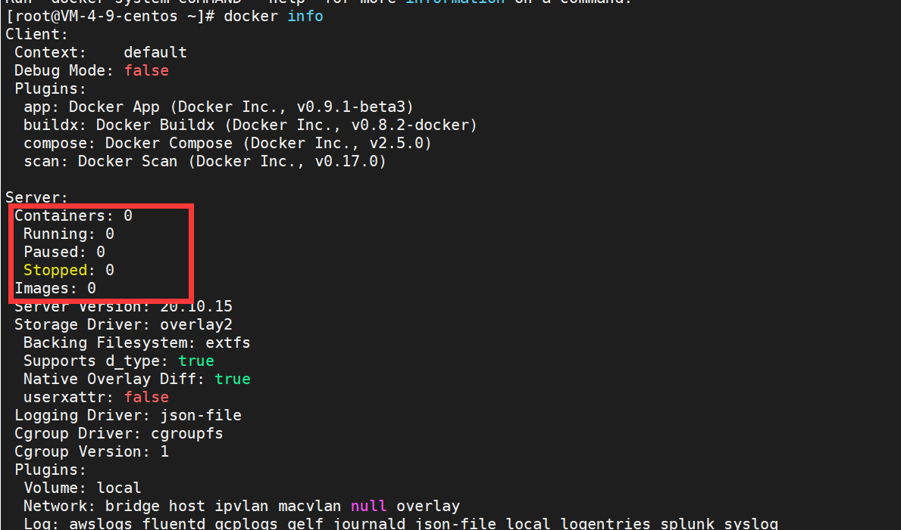
xxxxxxxxxx21systemctl restart docker2重启
xxxxxxxxxx71docker stop 容器名字/容器id // 停止容器2docker rm 容器名字/容器id // 删除容器3docker ps // 查看运行的容器4
5docker rmi <image id> // 删除镜像6
7docker logs id // 查看容器的日志，如果报错可以查看
镜像可以加速安装一些软件
在docker目录创建daemon.json文件存放加速器地址，并做如下配置
xxxxxxxxxx11vim /etc/docker/daemon.jsonxxxxxxxxxx31{2"registry-mirrors": ["https://registry.docker.cn.com"]3}配置完记得重启一下
xxxxxxxxxx11docker pull nginx默认使用版本为latest的镜像
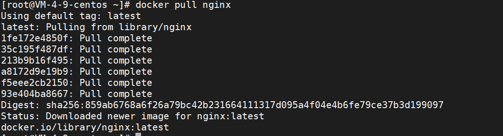
查看安装的镜像
xxxxxxxxxx11docker images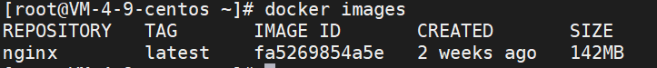
run 创建容器实例
-- name 容器命名
-v 映射目录
-d 设置容器后台运行
-p 本机端口映射 将容器的80端口映射到本机的80端口
语句最后一个nginx是使用镜像的名称
xxxxxxxxxx11docker run --name nginx-test -p 80:80 -d nginx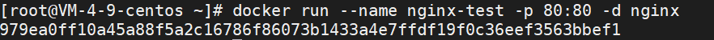
xxxxxxxxxx21docker start nginx-test2docker ps // 查看运行的容器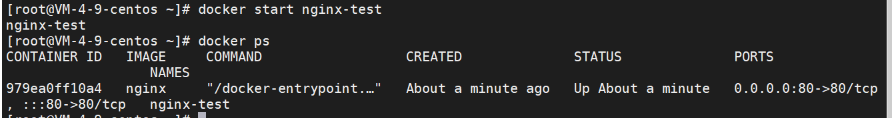
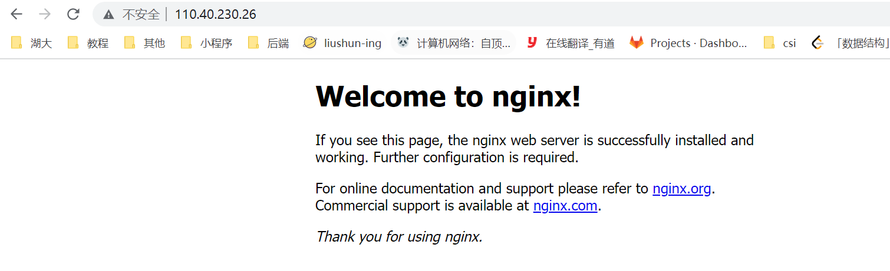
配置在容器中进行，太麻烦，所以把配置文件给映射到本地，方便配置与管理
创建本地目录
xxxxxxxxxx41mkdir -p /root/nginx/www /root/nginx/logs /root/nginx/conf2www: nginx存储网站网页的目录3logs: nginx日志目录4conf: nginx配置文件目录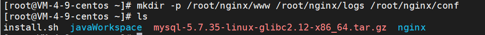
将刚刚的nginx-test容器配置复制到本地目录
xxxxxxxxxx31docker cp 979ea:/etc/nginx/nginx.conf /root/nginx/conf2docker cp 979ea:/etc/nginx/conf.d /root/nginx/conf3docker cp 979ea:/usr/share/nginx/html /root/nginx/www
停止移除该容器
xxxxxxxxxx31docker stop 9792docker rm 9793这个id唯一即可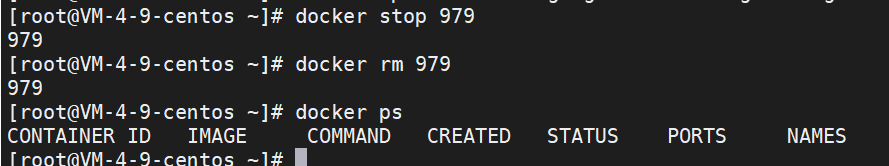
创建新容器，并进行文件的映射，并启动
xxxxxxxxxx11docker run -d -p 80:80 --name nginx-web -v /root/nginx/www:/usr/share/nginx/html -v /root/nginx/conf/nginx.conf:/etc/nginx/nginx.conf -v /root/nginx/logs:/var/log/nginx -v /root/nginx/conf/conf.d:/etc/nginx/conf.d nginx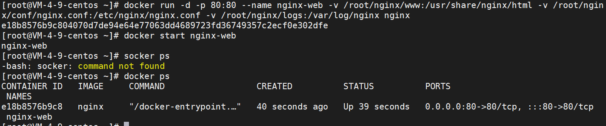
设置docker容器自启动
xxxxxxxxxx11docker update --restart=always nginx-webxxxxxxxxxx131# 开启容器自启动2docker update --restart=always 【容器名】3例如：docker update --restart=always tracker4
5# 关闭容器自启动6docker update --restart=no【容器名】7例如：docker update --restart=no tracker8
9# 相关配置解析10no： 不要自动重启容器。（默认）11on-failure：如果容器由于错误而退出，则重新启动容器，该错误表现为非零退出代码。12always：如果容器停止，请务必重启容器。如果手动停止，则仅在Docker守护程序重新启动或手动重新启动容器本身时才重新启动。（参见重启政策详情中列出的第二个项目）13unless-stopped：类似于always，除了当容器停止（手动或其他方式）时，即使在Docker守护程序重新启动后也不会重新启动容器。
然后上传自己的web项目到www目录下，一个项目一个文件夹
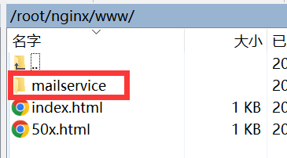
然后进行代理配置
xxxxxxxxxx701user nginx;2worker_processes auto;3
4error_log /var/log/nginx/error.log notice;5pid /var/run/nginx.pid;6
7
8events {9 worker_connections 1024;10}11
12
13http {14 include /etc/nginx/mime.types;15 default_type application/octet-stream;16
17 log_format main '$remote_addr - $remote_user [$time_local] "$request" '18 '$status $body_bytes_sent "$http_referer" '19 '"$http_user_agent" "$http_x_forwarded_for"';20
21 access_log /var/log/nginx/access.log main;22
23 sendfile on;24 #tcp_nopush on;25
26 keepalive_timeout 65;27
28 #gzip on;29
30 include /etc/nginx/conf.d/*.conf;31
32 // 主要是设置这个地方33 server {34 listen 80;35 server_name localhost;36
37 #charset koi8-r;38
39 #access_log logs/host.access.log main;40
41 #静态资源，都需要在这里设置访问权限,也可以不设置42 location ~ .*\.(gif|jpg|jpeg|png|bmp|map|swf|ioc|rar|zip|txt|flv|mid|doc|docx|pptx|ppt|pdf|xls|xlsx|mp3|wma|ttf|woff|woff2|js.map|map|eot|svg|json|ico|JPG|PNG|JPEG|DOC|DOCX|PPTX|PPT|PDF|XLS|XLSX)$43 {44 expires 30d; 45 #error_log /dev/null;46 #access_log /dev/null; 47 }48 49 location ~ .*\.(js|css)?$50 {51 expires 12h;52 #error_log /dev/null;53 #access_log /dev/null; 54 }55 # 在这里在设置/是没用的，它默认走的是default.conf里面的配置56 location /mailservice {57 root mailservice;58 index index.html index.htm;59 }60 #error_page 404 /404.html;61
62 # redirect server error pages to the static page /50x.html63 #64 error_page 500 502 503 504 /50x.html;65 location = /50x.html {66 root html;67 }68
69}70
修改完配置记得重启一下
到此，就可以访问了
访问http://110.40.230.26/mailservice
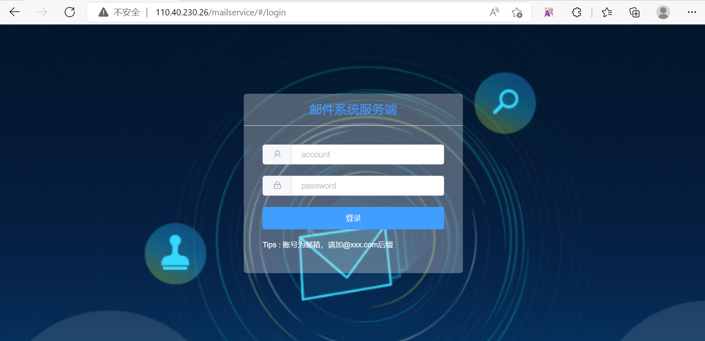
xxxxxxxxxx11docker pull mysql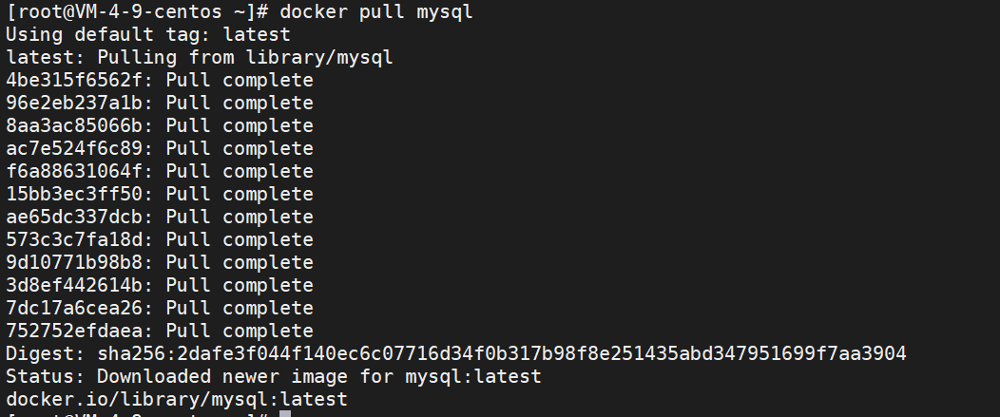
在宿主机创建mysql的配置文件的目录和数据目录
xxxxxxxxxx11mkdir -p /usr/mysql/conf /usr/mysql/data /usr/mysql/logs在配置文件目录下创建MySQL的配置文件my.cnf
xxxxxxxxxx11vim /usr/mysql/conf/my.cnfxxxxxxxxxx331[client]2
3#socket = /usr/mysql/mysqld.sock4
5default-character-set = utf8mb46
7[mysqld]8
9#pid-file = /var/run/mysqld/mysqld.pid10
11#socket = /var/run/mysqld/mysqld.sock12
13#datadir = /var/lib/mysql14
15#socket = /usr/mysql/mysqld.sock16
17#pid-file = /usr/mysql/mysqld.pid18
19datadir = /usr/mysql/data20
21character_set_server = utf8mb422
23collation_server = utf8mb4_bin24
25secure-file-priv = NULL26
27# Disabling symbolic-links is recommended to prevent assorted security risks28
29symbolic-links = 030
31# Custom config should go here32
33!includedir /etc/mysql/conf.d/
-v : 挂载宿主机目录和 docker容器中的目录，前面是宿主机目录，后面是容器内部目录
-d : 后台运行容器
-p 映射容器端口号和宿主机端口号
-e 环境参数，MYSQL_ROOT_PASSWORD设置root用户的密码
xxxxxxxxxx31docker run --restart=always -d --name mysql -v /usr/mysql/conf/my.cnf:/etc/mysql/my.cnf -v /usr/mysql/logs:/logs -v /usr/mysql/data:/var/lib/mysql -p 3306:3306 -e MYSQL_ROOT_PASSWORD=123456 mysql2
3docker start mysql // 开启服务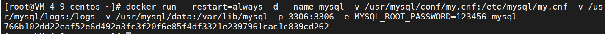
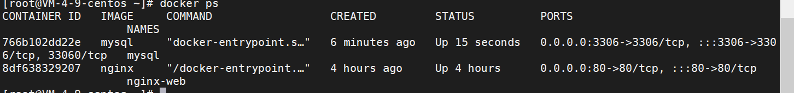
进入mysql容器
xxxxxxxxxx121docker exec -it mysql /bin/bash2
3输入4mysql -u root -p5你的密码6mysql>use mysql;7mysql>alter user 'root'@'%'identified with mysql_native_password by '123456';8mysql>flush privileges;9// 设置并更新权限10mysql>quit;11
12然后输入exit或者ctrl+d退出容器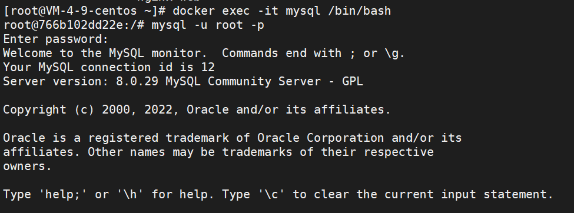
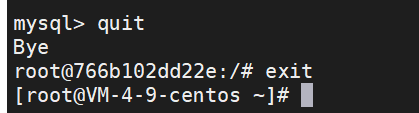
完成，之后可以用navicat连接了